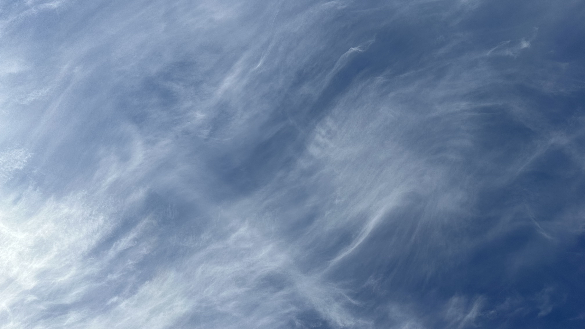

11/23/2023
So, I was clearly attached to the east river pier (or the memories,the people etc etc) to have gone there every week. This week though, ten whole weeks later, more than that actually, I decided to switch it up, break the routine. I used to think I found comfort in a routine, I usually plan by the minute and then say I like impromptu plans *hypocrisy haha* So, what did I learn ten/twelve long (not really, they flew by way too quick) weeks later. Don't limit yourself. Don't bind yourself to a place to do something. Explore another pier, hell, I found myself in California this week, on the beach, next to the ocean, the long limitless ocean.
Let's do this again. Welcome, to the Relflection River, *don't limit yourself* why not an ocean? Well, whatever water body, Same blue sky and water, different thoughts every time, that remains true, it's a place for my thoughts. Week two, I said, I find comfort in a routine. I've decided to break the routine, let go. When you're in the same routine for too long, that comfort starts to feel constricting, suffocating. The funny or not funny part about that is you put yourself there and you can choose to get out anytime.I wanted to see some new places and yes I know, I can't fly out to California every week but maybe I'll walk to a different pier, new faces, new memories.
Nonetheless, LA was beautiful, water is really comforting to me, that's why I let the ocean take over my river, just as nature does, why not make use of the limitless blue ocean. The ocean makes me feel so small, just like the lights I see from the east river pier.
tunes
Sit back, take a breath, let's reflect...

just the infinite sky.
Constant
It's the feeling,
not the body,
as the water consumes me,
I feel sorry.
What a chokehold,
but it's so easy
all I needed to do was breath,
unclench and let go to feel.
Fell into the deep ocean,
not drowning,
it's just water
it's all around now.
Just like the blue,
there's so many infinities,
water and sky, I'll find mine too.
Goodbye my friend, look how the time blew.